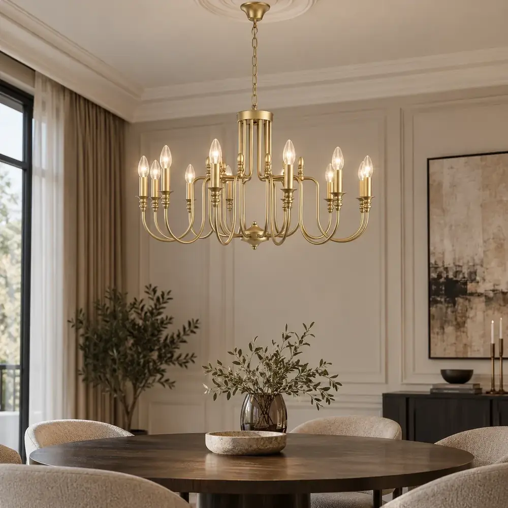
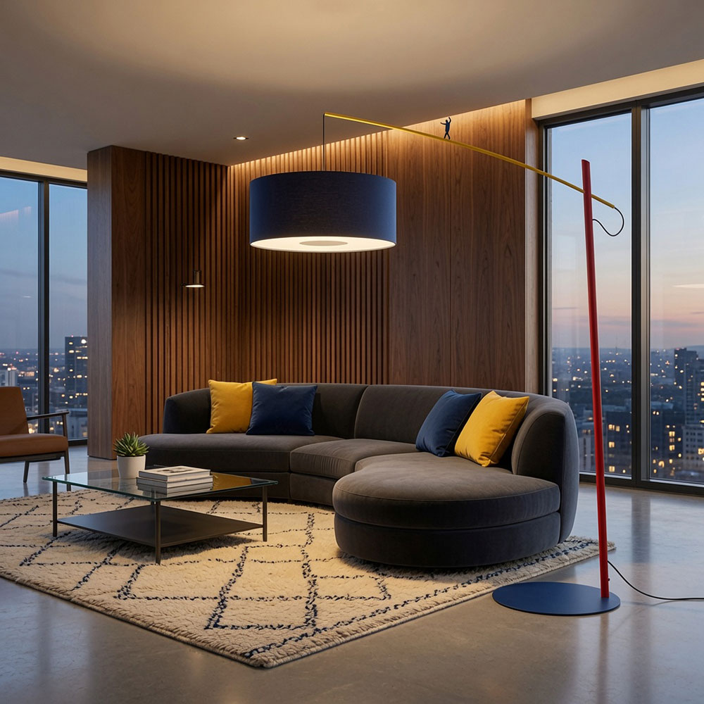
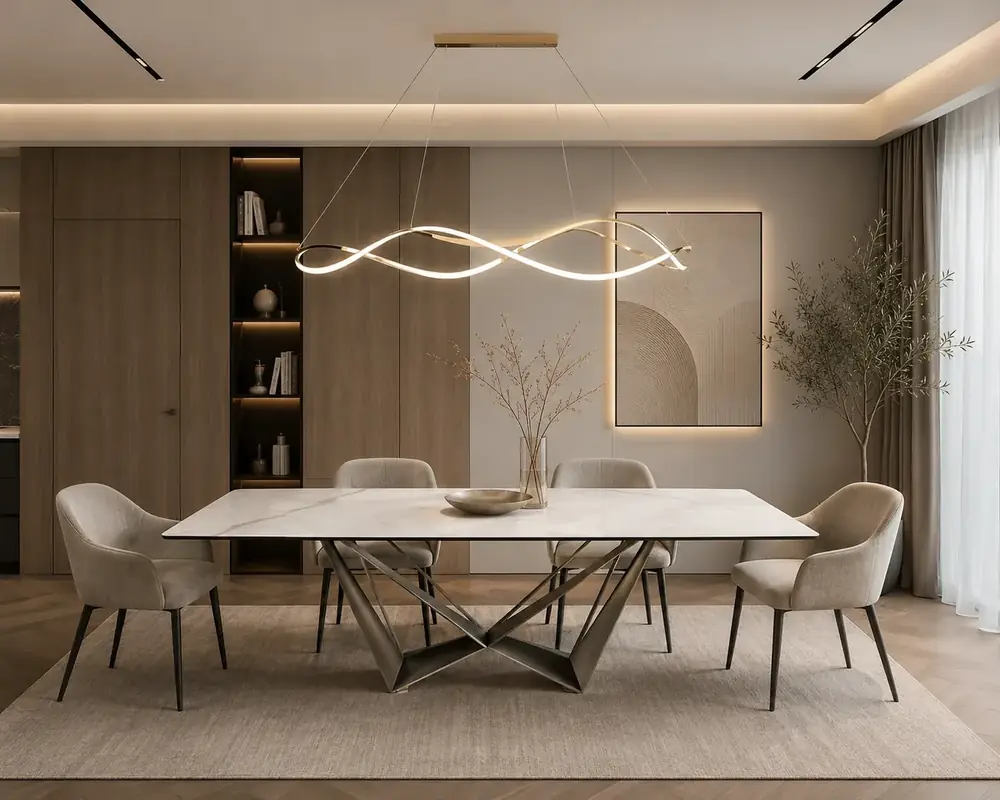
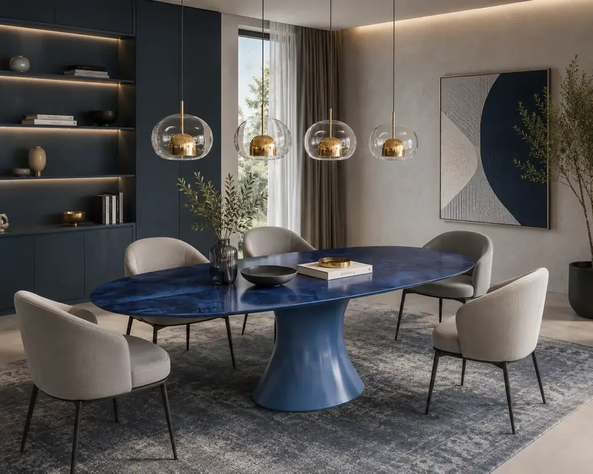
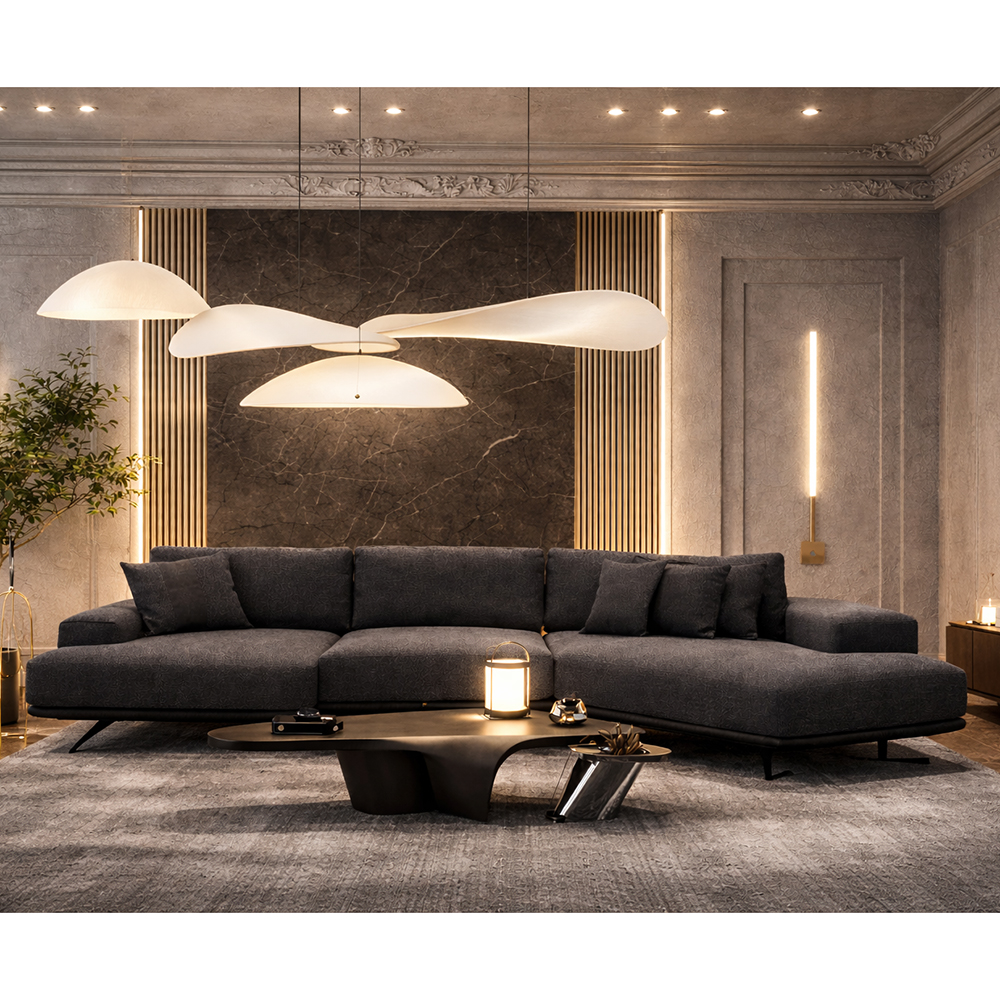
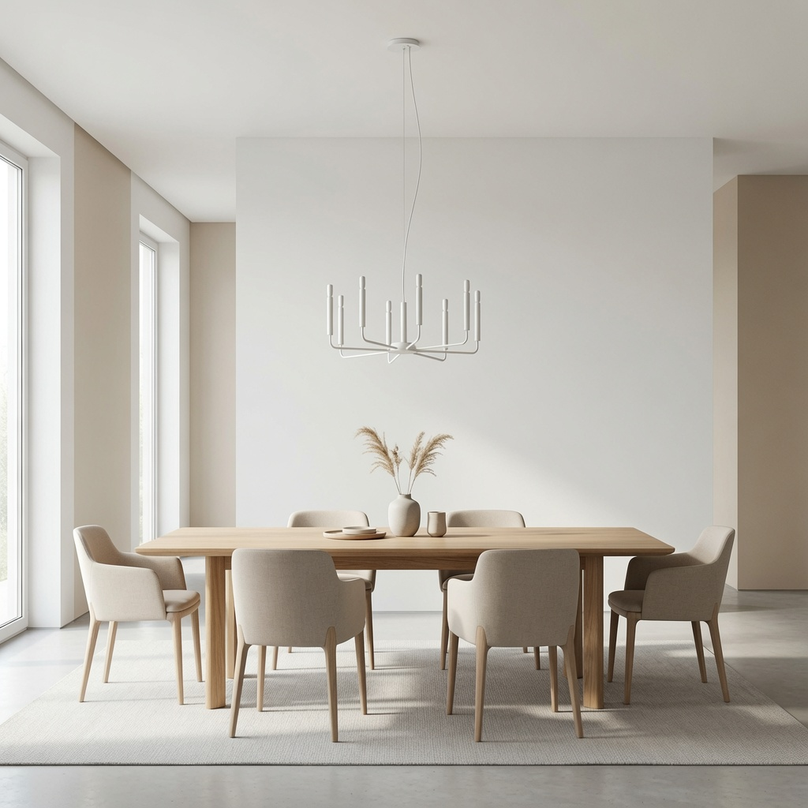
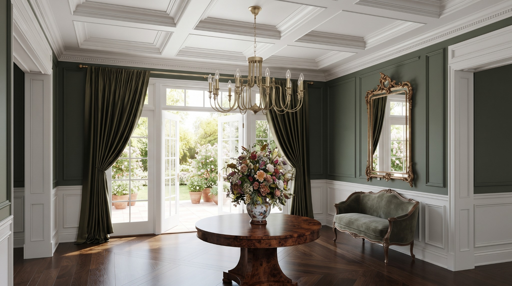
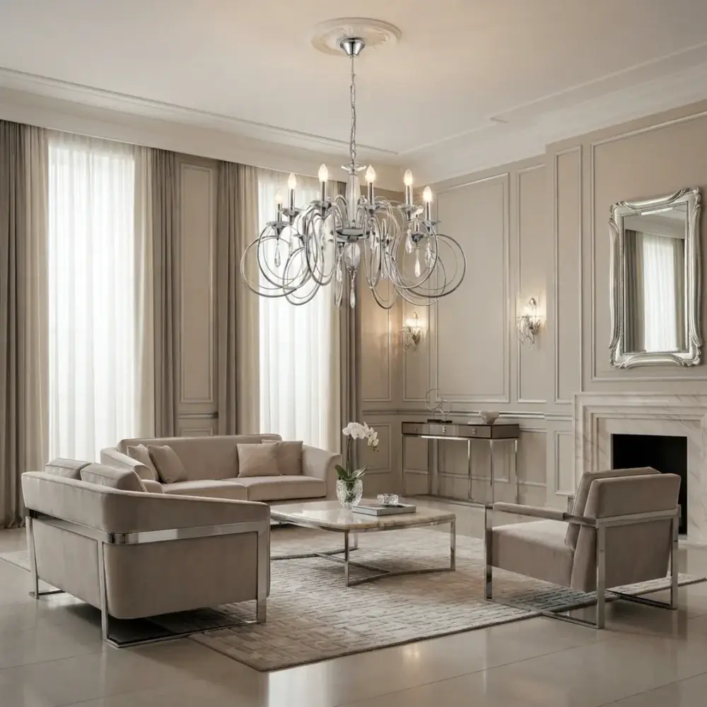
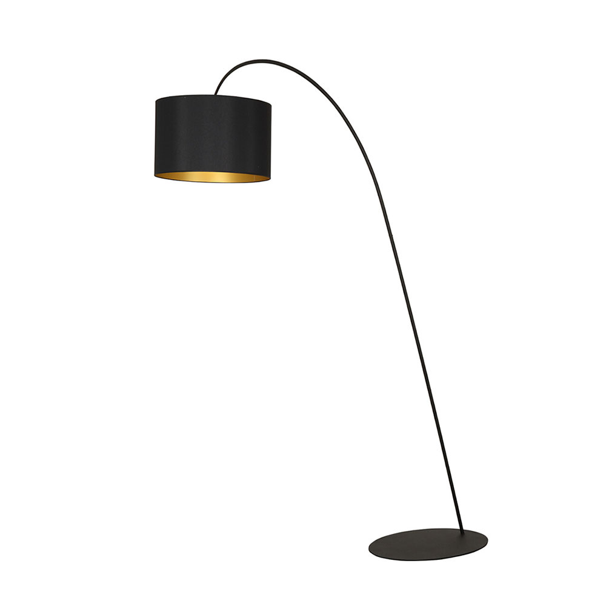
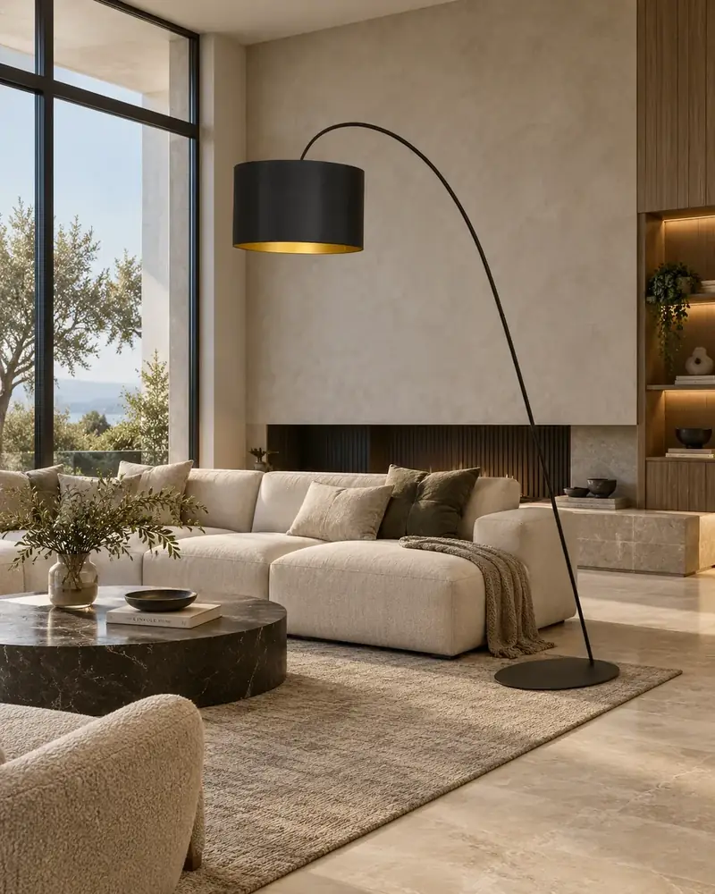

01
Gold Chandelier — Dining Scene
AI interior • Lighting visualization • Product focus
AI CONTENT CREATOR • PRODUCT VISUALS • VIDEO • WEB
AI-generated interiors, product-focused visuals, cinematic Reels and practical web content for lighting, furniture and lifestyle brands.



SELECTED AI IMAGES
Curated work





PRODUCT-TO-CONTENT CASE
I preserve the product’s silhouette and materials, place it at a believable scale, build a matching interior, then extend the final image into a cinematic short-form video.


AI VIDEO & REELS
Selected motion work
01 • HERO PRODUCT FILM
A premium product-led scene using restrained camera motion and a controlled interior composition. The visual direction keeps the lamp as the clear hero.
Reference → AI interior → cinematic motion.
Classic product styling with smooth cinematic motion.
Sequential on/off behavior with a clear technical brief.
A short experimental scene showing broader AI storytelling range.
WHAT I DO
Creative + technical
Product-focused interiors, lifestyle visuals, white-background assets and controlled image edits.
Image-to-video, cinematic product clips, motion prompts, short-form concepts and editing.
Descriptions, specifications, product cards and multilingual content in Armenian, Russian and English.
Catalog updates, visual preparation, publishing and ongoing e-commerce content support.
Responsive interfaces with JavaScript, React.js, Next.js, Redux Toolkit and REST APIs.
Detailed prompts for product preservation, consistent styling and repeatable AI workflows.
ABOUT
AI Content Creator • Digital Content Specialist • Frontend Developer
I combine AI-assisted visual creation with practical website and e-commerce experience. My work is focused on product presentation: visuals, short-form video, product information and polished digital experiences.
My frontend background helps me create content with real interfaces in mind — responsive layouts, product pages, catalogs and conversion-focused presentation.
AVAILABLE FOR REMOTE WORK
Open to freelance projects, AI content roles, content management and long-term collaboration.